제목은 간결하게
보드에서 빠르게 훑고, 선택한 항목의 본문은 상세에서 편하게 읽습니다.
WINDOWS DESKTOP · 2026.10.19
바탕화면 대시보드부터 목표, 프로젝트, 할 일과 메모까지.
MyPlanner Windows 앱의 현재 UI를 한곳에 모았습니다.
현재 구현을 보여 주는 정적 화면 모음입니다. 기능을 실행하는 웹 버전은 아닙니다.
01 / DASHBOARD
시계와 7일 스트립, 오늘 일정·마감·다가오는 일정, 다섯 관리 화면과 월간 달력을 한 화면에서 확인합니다.
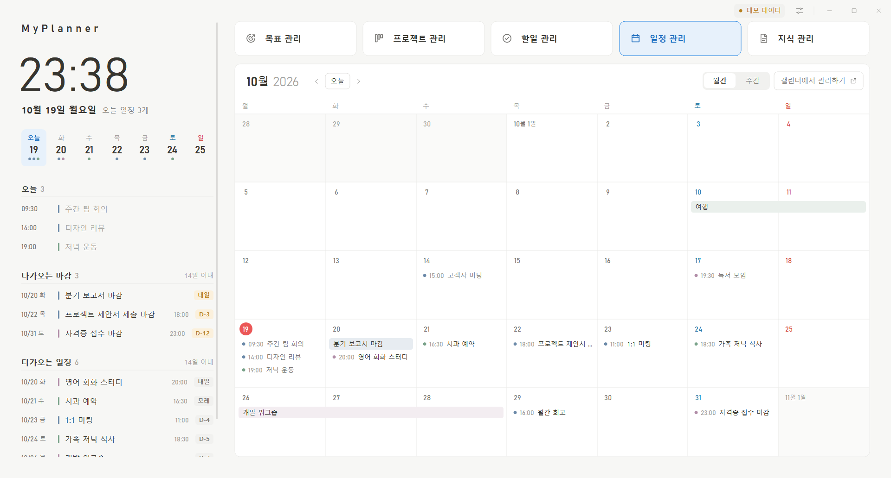
02 / CALENDAR
날짜 헤더를 유지하고 일정 영역 안에서 스크롤합니다. Google 일정과 날짜를 지정한 할 일을 함께 살펴봅니다.
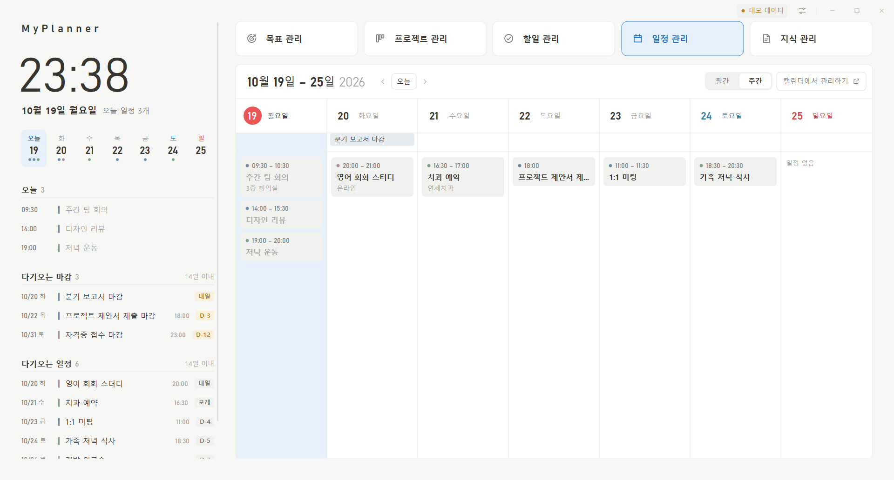
03 / EVENT DETAIL
선택한 일정의 제목, 캘린더, 시간과 본문을 오른쪽에서 읽습니다. Google Calendar 일정은 읽기 전용입니다.
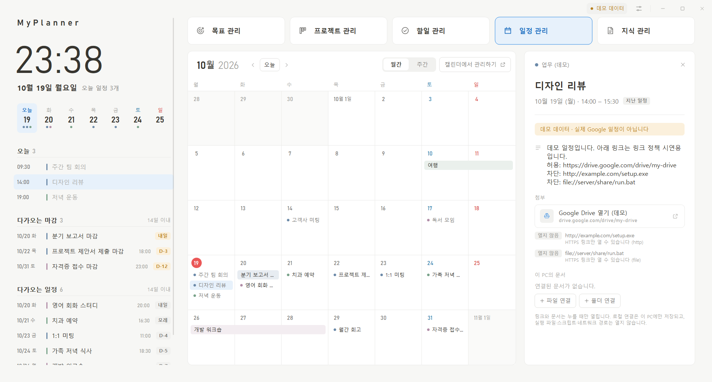
04 / GOALS
최종 목표·5년 목표·1년 목표를 세로 열로 나눕니다. 보드는 제목을 간결하게 보여 주고 상세 내용은 선택 후 읽습니다.
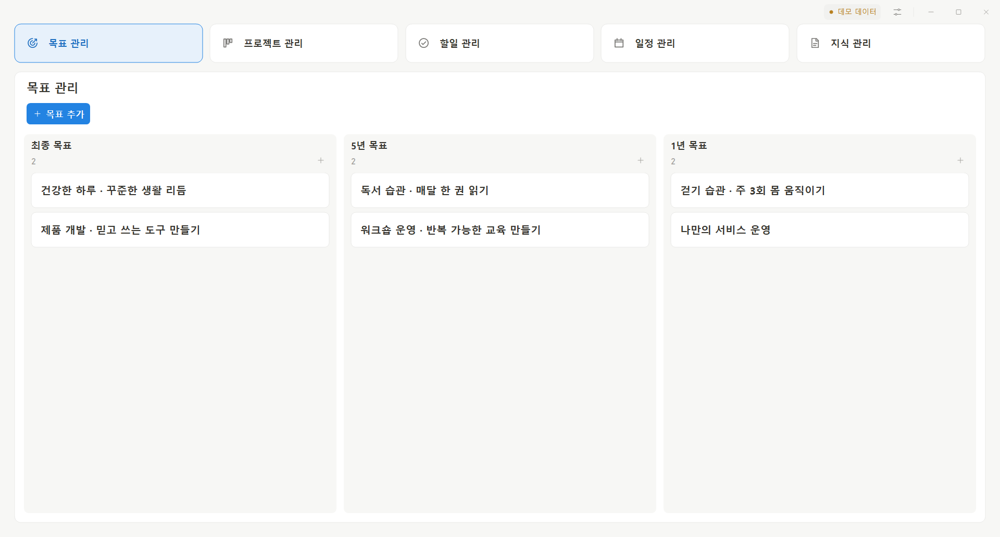
05 / PROJECTS
준비 중·진행 중 두 열로 실제 업무를 관리합니다. 완료·보류·보관 항목은 별도 보관함에서 확인합니다.
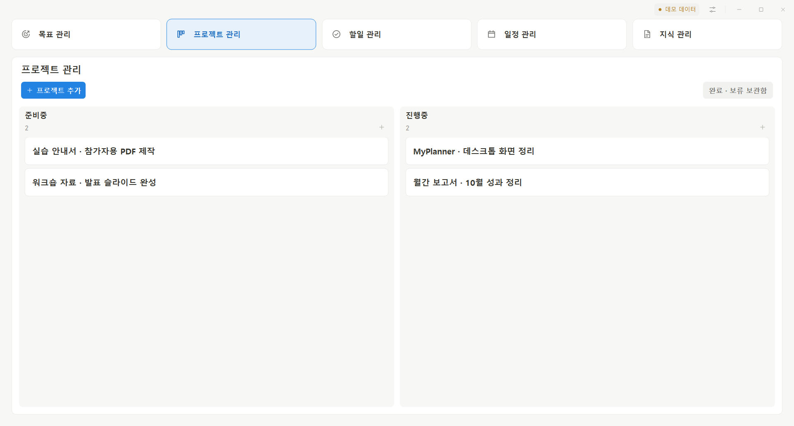
06 / TASKS
위의 기간 탭과 아래의 상태 열을 분리합니다. 기본 기간은 전체이며 다음·예정·대기 세 열을 사용합니다.
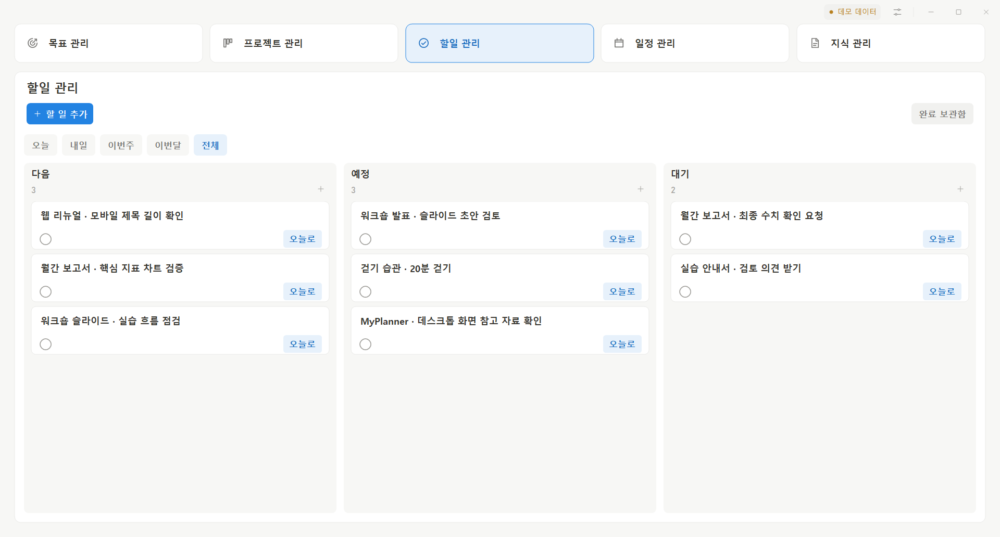
07 / DETAIL
큰 제목과 소제목, 본문을 오른쪽 인라인 패널에서 읽습니다. 목록의 제목과 상세 본문의 역할을 분리합니다.
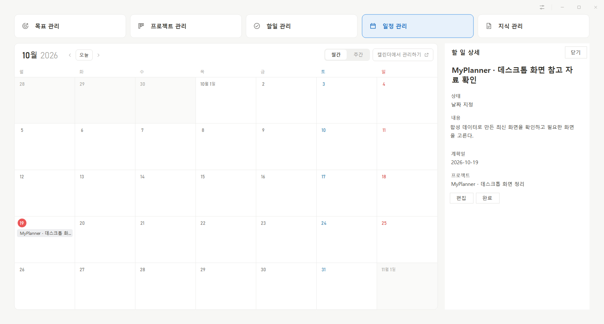
08 / EDITOR
오른쪽 영역에서 항목을 작성합니다. 긴 폼에서도 저장·취소를 사용할 수 있고 작성 중 화면 이동을 보호합니다.
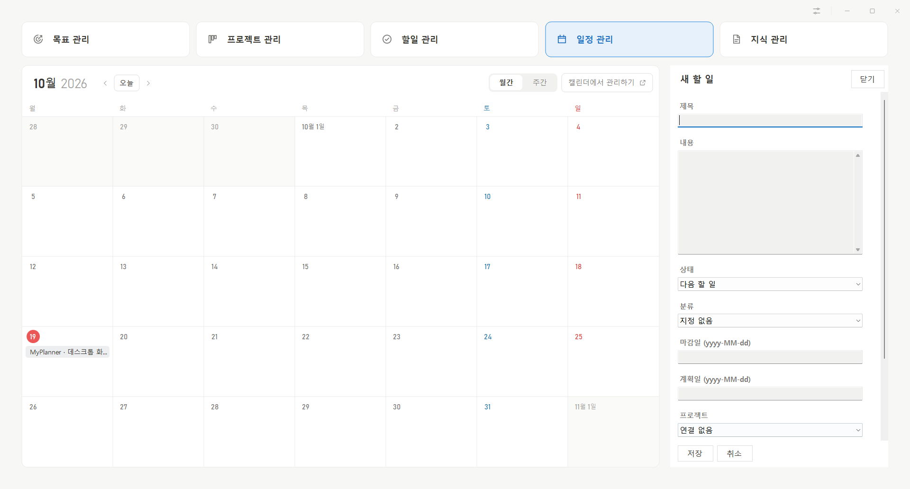
09 / KNOWLEDGE
지식 관리에서 메모와 참고 자료를 구분합니다. 제목으로 찾고 선택한 본문과 연결은 상세 영역에서 확인합니다.
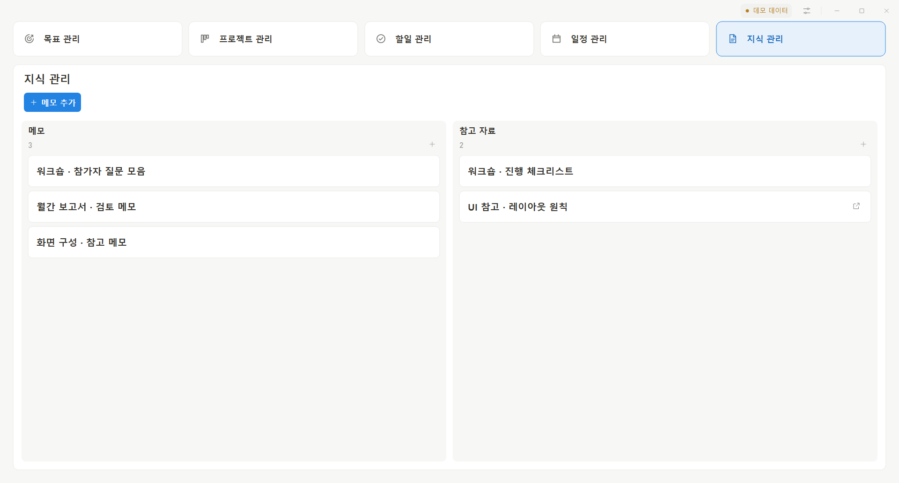
10 / SETTINGS
보기, 테마, 시계와 창 배치를 조정합니다. PC의 Google 연결과 Android 앱 전용 알림 설정은 환경에 맞게 구분합니다.
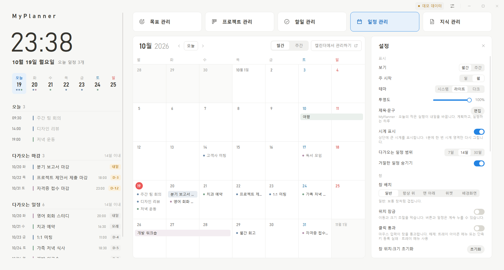
11 / DARK THEME
같은 정보 구조에서 배경과 글자, 경계선과 선택 상태를 어두운 환경에 맞춥니다. 기본 디자인 검토는 라이트 테마를 기준으로 합니다.
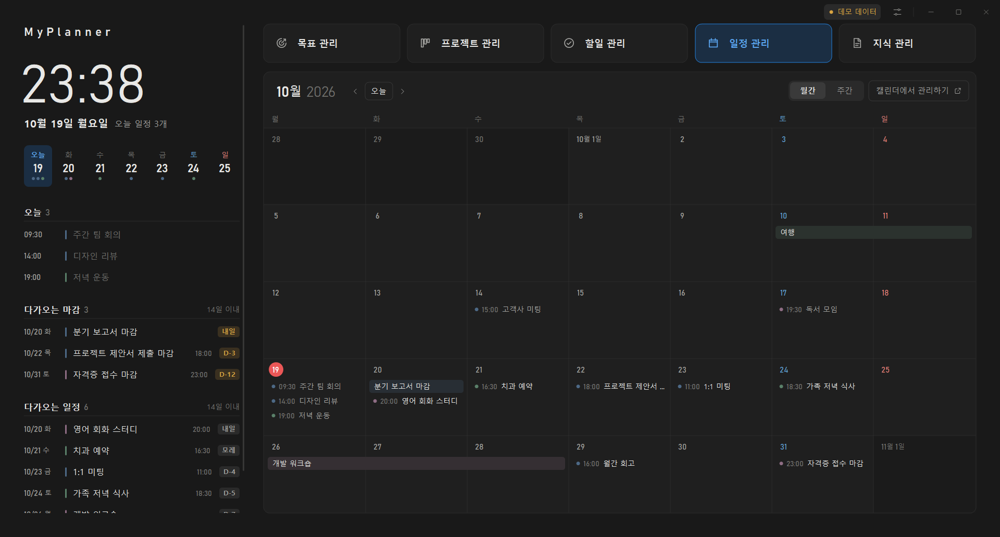
RENEWAL BRIEF
보드에서 빠르게 훑고, 선택한 항목의 본문은 상세에서 편하게 읽습니다.
오른쪽 인라인 패널을 우선하고 긴 폼의 저장·취소와 작성 중 변경 보호를 유지합니다.
목표·프로젝트·할 일의 의미, 기간·상태, 실행일·마감일을 구분합니다.
같은 디자인 체계를 사용하되 큰 화면의 열 배치와 작은 화면의 탐색을 각각 설계합니다.
기능 목록, 화면별 요구사항, 반응형 크기와 개발 제약은 의뢰서에서 확인할 수 있습니다.
전체 리뉴얼 의뢰서 다운로드